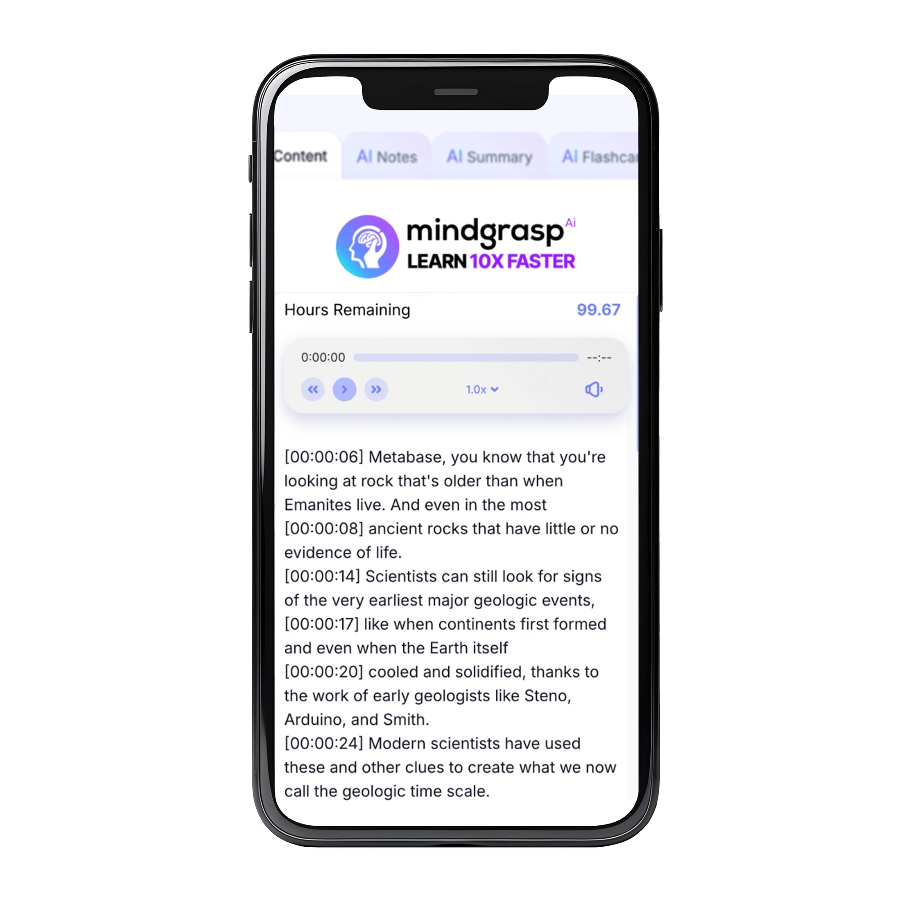
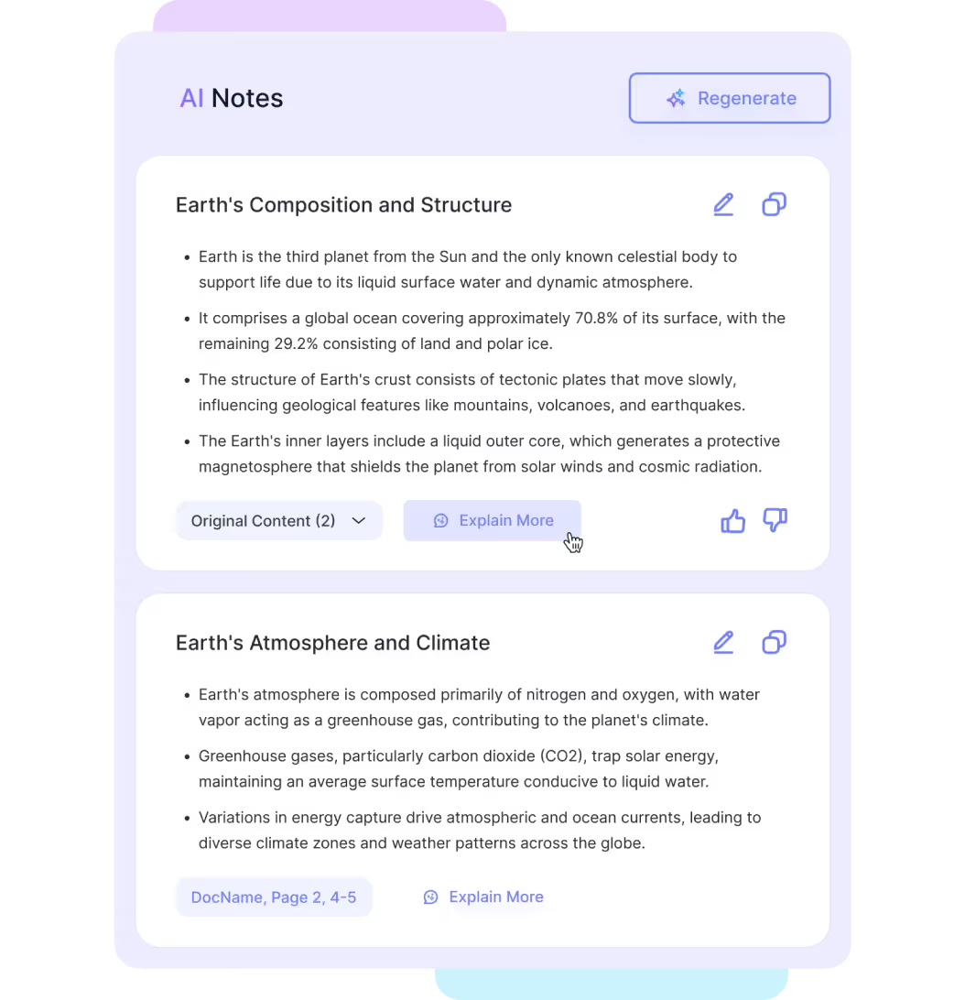
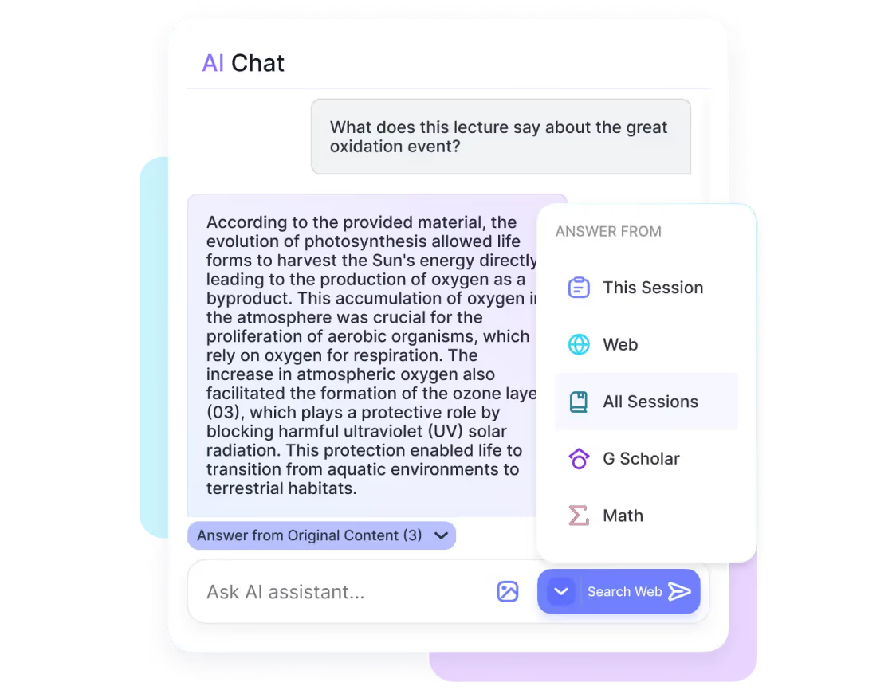
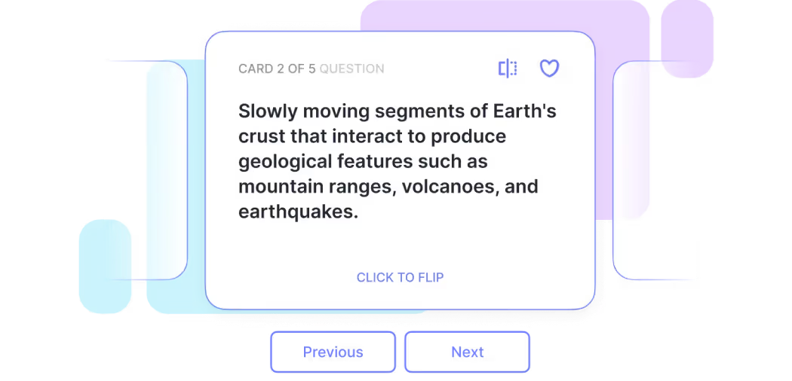
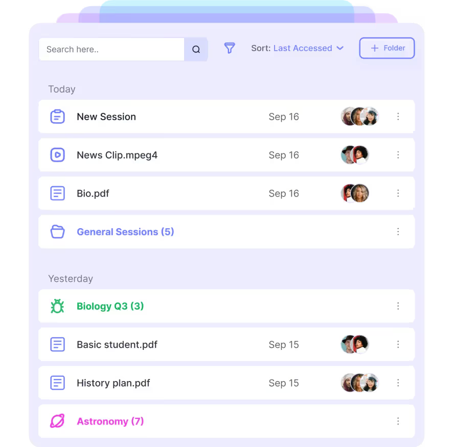

Easily record your class and upload course materials
With the click of a button you can record your class and watch AI take notes live. Easily upload all your course materials like textbooks, syllabus, or study guides.

With the click of a button you can record your class and watch AI take notes live. Easily upload all your course materials like textbooks, syllabus, or study guides.

Get straight to the point quickly with AI generated notes and summaries. Upload a web link, video, PDF, or voice recording and get structured notes in seconds.

Enable endlss AI wisdom with a simple message to the AI assistant. Ask a question about a specific content upload, or ask it to search the entire internet to give you relevant references and live links.

To help you memorize and retain information better, auto-generate flashcards and quizzes to put your new knowledge to use. Let AI do the heavy lifting of building flashcards or quiz questions, and spend your time actually learning the material instead.

Easily keep all your notes, flashcards, and quizzes structured with folders. Group your content by class, topic, or exam so everything stays in one place. With built-in organization tools, you’ll spend less time searching and more time actually learning.